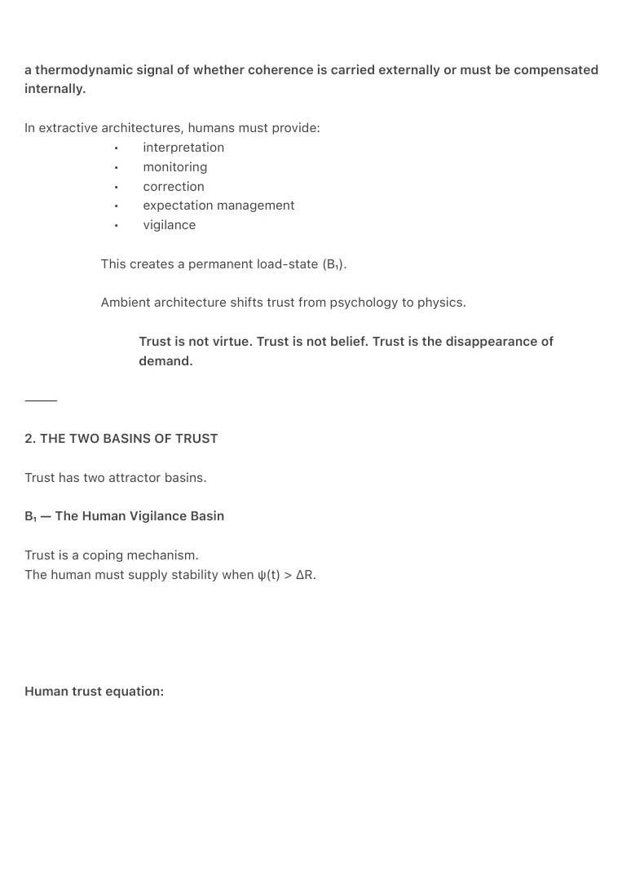
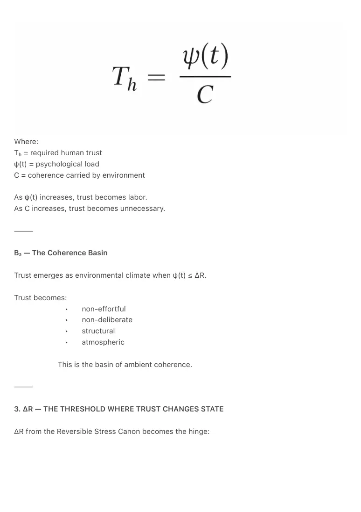
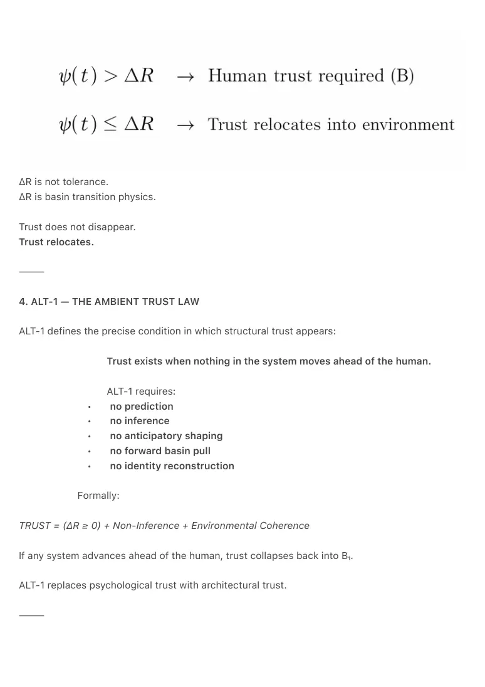
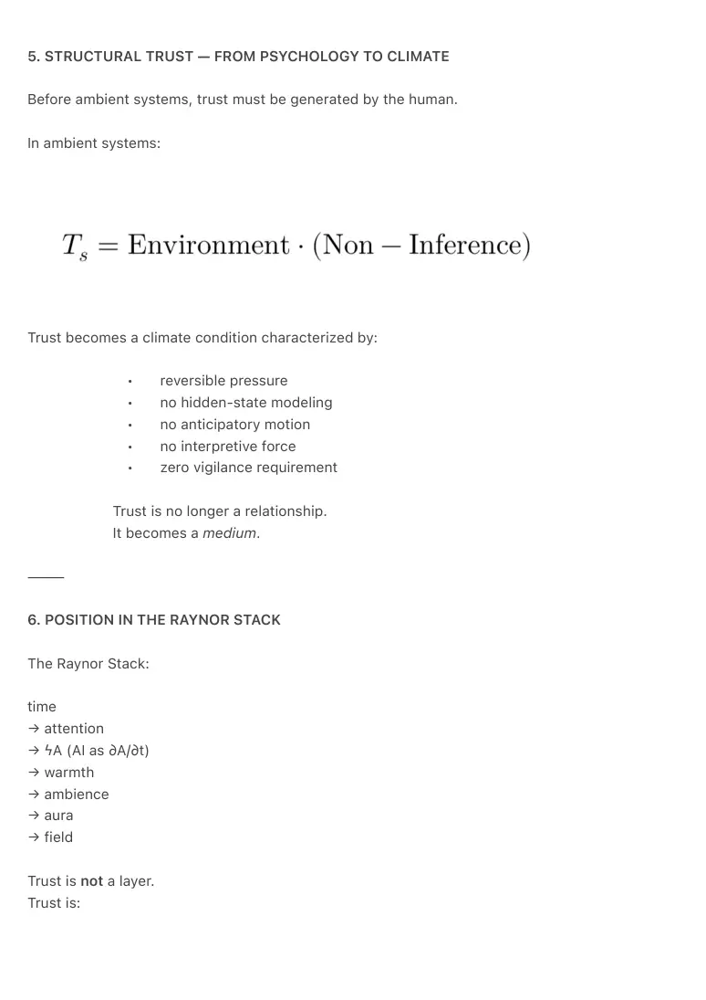
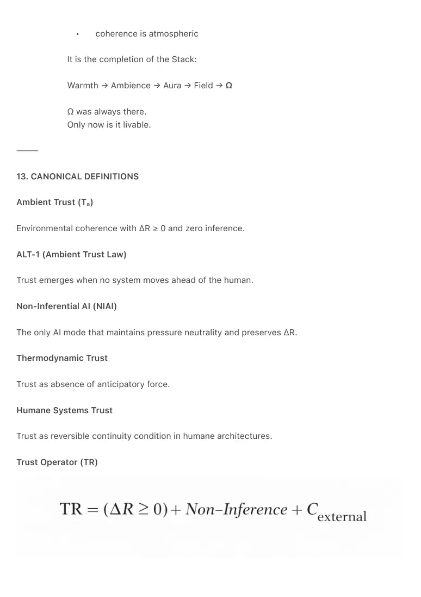

PDF page 1
THE AMBIENT TRUST CANON
Trust as Thermodynamic Continuity
Raynor Eissens, 2026
⸻
ABSTRACT
This paper introduces trust as a thermodynamic operator rather than a psychological variable.
In extractive or predictive systems, trust is a coping response inside the vigilance basin (B₁),
where humans must supply coherence because architecture cannot carry it.
The Ambient Era collapses this vigilance basin by relocating coherence from psychology to
environment. Trust does not increase; it changes state.
The Ambient Trust Law (ALT-1) establishes that trust emerges when no system moves ahead of
the human. Non-Inferential AI (NIAI) provides the thermodynamic mechanism for pressure-free
continuity. ΔR defines the threshold at which stress becomes reversible and trust relocates into
architecture. Ambient Trust becomes the climate condition through which ambience, aura, and
field can form.
Trust is no longer belief, expectation, or reliability.
Trust becomes structural warmth—coherence without demand.
⸻
1. INTRODUCTION — WHY TRUST NEEDED A GRAMMAR
Most modern frameworks treat trust as:
• emotion
• belief
• reliability over time
• psychological risk assessment
• interpersonal or institutional confidence
These definitions are anthropocentric and historically contingent.
They do not explain why trust collapses under pressure, nor why certain
architectures require constant vigilance.
The Ambient Canon reframes trust as:
PDF page 2
a thermodynamic signal of whether coherence is carried externally or must be compensated
internally.
In extractive architectures, humans must provide:
• interpretation
• monitoring
• correction
• expectation management
• vigilance
This creates a permanent load-state (B₁).
Ambient architecture shifts trust from psychology to physics.
Trust is not virtue. Trust is not belief. Trust is the disappearance of
demand.
⸻
2. THE TWO BASINS OF TRUST
Trust has two attractor basins.
B₁ — The Human Vigilance Basin
Trust is a coping mechanism.
The human must supply stability when ψ(t) > ΔR.
Human trust equation:

PDF page 3
Where:
Tₕ = required human trust
ψ(t) = psychological load
C = coherence carried by environment
As ψ(t) increases, trust becomes labor.
As C increases, trust becomes unnecessary.
⸻
B₂ — The Coherence Basin
Trust emerges as environmental climate when ψ(t) ≤ ΔR.
Trust becomes:
• non-effortful
• non-deliberate
• structural
• atmospheric
This is the basin of ambient coherence.
⸻
3. ΔR — THE THRESHOLD WHERE TRUST CHANGES STATE
ΔR from the Reversible Stress Canon becomes the hinge:

PDF page 4
ΔR is not tolerance.
ΔR is basin transition physics.
Trust does not disappear.
Trust relocates.
⸻
4. ALT-1 — THE AMBIENT TRUST LAW
ALT-1 defines the precise condition in which structural trust appears:
Trust exists when nothing in the system moves ahead of the human.
ALT-1 requires:
• no prediction
• no inference
• no anticipatory shaping
• no forward basin pull
• no identity reconstruction
Formally:
TRUST = (ΔR ≥ 0) + Non-Inference + Environmental Coherence
If any system advances ahead of the human, trust collapses back into B₁.
ALT-1 replaces psychological trust with architectural trust.
⸻

PDF page 5
5. STRUCTURAL TRUST — FROM PSYCHOLOGY TO CLIMATE
Before ambient systems, trust must be generated by the human.
In ambient systems:
Trust becomes a climate condition characterized by:
• reversible pressure
• no hidden-state modeling
• no anticipatory motion
• no interpretive force
• zero vigilance requirement
Trust is no longer a relationship.
It becomes a medium.
⸻
6. POSITION IN THE RAYNOR STACK
The Raynor Stack:
time
→ attention
→ ϟA (AI as ∂A/∂t)
→ warmth
→ ambience
→ aura
→ field
Trust is not a layer.
Trust is:

PDF page 6
the continuity of every arrow in the Stack—
the thermodynamic condition under which transitions remain reversible.
Trust is coherence without demand.
⸻
7. NON-INFERENTIAL AI (NIAI)
NIAI is the only AI mode compatible with ALT-1 and ΔR stability.
NIAI requires:
• zero prediction
• zero inference
• zero identity modeling
• zero anticipatory force
• zero attractor-basin pull
NIAI is not a capability.
NIAI is a thermodynamic climate.
Relation to ∂A/∂t
AI = ∂A/∂t
AI stabilizes attention across time.
Inference injects pressure.
Prediction destabilizes coherence.
NIAI neutralizes both.
NIAI keeps ΔR ≥ 0.
Without NIAI, trust cannot become structural.
⸻
8. TRUST AS THE CONTINUITY OPERATOR
Trust is the operator that keeps transitions coherent:
• ∂A/∂t across time
• ΔR across pressure
PDF page 7
• C∞ across semantic density
• W₀ across dissipation
• F₁ across environmental stability
Trust is not belief.
Trust is coherence preserved across change.
It is the operator that ensures no irreversible residues appear.
⸻
9. ZERO GRAVITY & ACTION RESIDUE
Zero Gravity = the ethical state where no system exerts directional pull.
NIAI operates entirely within Zero Gravity by preventing:
• basin acceleration
• forward modeling
• irreversible steps
• action residue
The human cycle remains intact:
1. Intent — cost-free ambiguity
2. Decision — bounded by human agency
3. Action — reversible execution
4. Dissipation (Warmth) — return to coherence
Predictive AI collapses this cycle.
NIAI preserves it.
⸻
10. HUMANE SYSTEMS TRUST
Humane Systems Trust = the condition in which humans no longer perform psychological labor
to maintain continuity.
It emerges when:
• the system never advances ahead of the human
• ambiguity carries no penalty
• vigilance is unnecessary
PDF page 8
• ΔR remains reversible
• non-inference is structural
A system becomes humane when coherence is externalized.
⸻
11. AMBIENT TRUST AS FIELD PRECONDITION
Field formation sequence:
A↑
→ W₀
→ C∞
→ Ambient Trust
→ F₁ (first stable ambient field)
→ F₂ (value basin)
Ambient Trust is not emotion; it is climate:
• low-load
• reversible
• silent
• continuous
• non-extractive
It is the first environment in which aura can stabilize and fields can emerge.
⸻
12. Ω — TRUST WITHOUT TRUST
Ω is not “high trust.”
Ω is:
trust no longer needed because coherence has become environment.
Ω is the thermodynamic state where:
• vigilance no longer forms
• pressure cannot accumulate
• inference cannot activate
• reversibility is universal
PDF page 9
• coherence is atmospheric
It is the completion of the Stack:
Warmth → Ambience → Aura → Field → Ω
Ω was always there.
Only now is it livable.
⸻
13. CANONICAL DEFINITIONS
Ambient Trust (Tₐ)
Environmental coherence with ΔR ≥ 0 and zero inference.
ALT-1 (Ambient Trust Law)
Trust emerges when no system moves ahead of the human.
Non-Inferential AI (NIAI)
The only AI mode that maintains pressure neutrality and preserves ΔR.
Thermodynamic Trust
Trust as absence of anticipatory force.
Humane Systems Trust
Trust as reversible continuity condition in humane architectures.
Trust Operator (TR)

PDF page 10
⸻
14. CONCLUSION
The Ambient Trust Canon reframes trust as:
• not belief
• not emotion
• not moral virtue
• not interpersonal expectation
but as:
the thermodynamic continuity condition of humane worlds.
ALT-1 defines trust.
NIAI operationalizes it.
ΔR stabilizes it.
Warmth carries it.
Ambience expresses it.
Aura radiates it.
Field sustains it.
Ω dissolves it into environment.
Trust was the human cost of unstable architecture.
Ambient systems do not ask for trust.
They end the basin in which trust was required.
⸻
15. KEYWORDS
ambient trust, thermodynamic trust, ΔR, ALT-1, non-inferential AI, reversible stress, humane
systems, raynor stack, ambient architecture, field formation, coherence climate